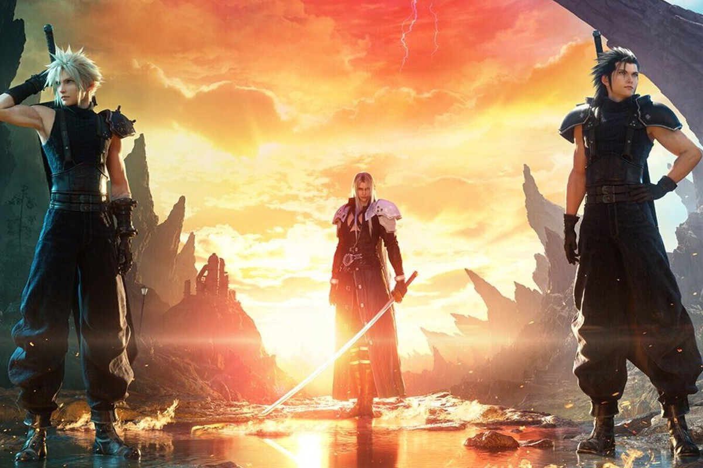
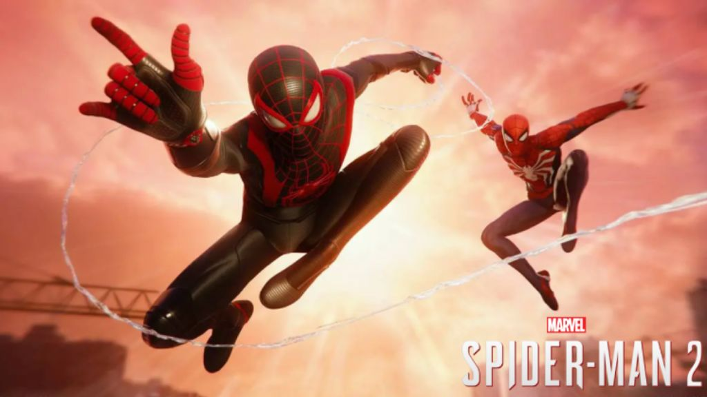

Casi todo el contenido de Final Fantasy 7 Rebirth se ha inspirado en uno de los mejores juegos de la
historia, The Witcher 3

El director del juego, Naoki Hamaguchi, ha concedido una extensa entrevista con el medio Game
Informer.
Ahí han tratado muchos aspectos, pero el más interesante es cuando habla sobre The Witcher 3. El
directivo de Square Enix explica que el contenido secundario del próximo RPG de fantasía constituye
alrededor del 80% del juego en cuanto a exploración. "Para Rebirth, nos preocupamos de tener este
selecto número de contenido secundario, que realmente trabajamos para desarrollar en profundidad",
señala.
PlayStation ya tiene su GOTY 2023, y no es ni Baldur's Gate 3 ni Alan Wake 2. El mejor juego del año
es
Spider-Man 2, según los votos de los jugadores

Los premios a Juego del año 2023:
- Mejor personaje nuevo - Venom | Marvel’s Spider-Man 2
- Mejor historia - Marvel’s Spider-Man 2
- Mejor despliegue gráfico - Marvel’s Spider-Man 2
- Mejor dirección artística - Alan Wake 2
- Mejor diseño de sonido - Marvel’s Spider-Man 2
- Mejor banda sonora del año - Marvel’s Spider-Man 2
- Mejores funciones de accesibilidad - Marvel’s Spider-Man 2
- Mejor uso del DualSense - Marvel’s Spider-Man 2
- Mejor experiencia multijugador - Baldur's Gate 3
- Mejor juego en curso - Fortnite
- Mejor expansión - Cyberpunk 2077: Phantom Liberty
- Mejor juego deportivo - EA Sports FC 24
- Mejor juego independiente - Sea of Stars
- Juego del año para PS VR2 - Resident Evil Village VR Mode
- Juego del año para PS4 - Hogwarts Legacy
- Juego del año para PS5 - Marvel’s Spider-Man 2
- Mejor estudio - Insomniac Games
- Juego de PlayStation más esperado de 2024 y más allá - Grand Theft Auto VI
Tal y como se puede apreciar, el juego que más ha triunfado ha sido Spider-Man 2, mientras que
Baldur's
Gate 3 y Alan Wake 2 no han conseguido una gran representación, aunque sí que han estado cerca de
ser
los ganadores en muchas categorías. Por otro lado y a modo de curiosidad, el Juego de PlayStation
más
esperado de 2024 y más allá ha sido Grand Theft Auto VI, título al que le seguían Final Fantasy VII
Rebirth, Marvel’s Wolverine y Dragon's Dogma 2.